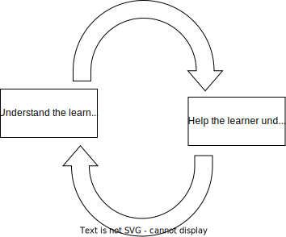
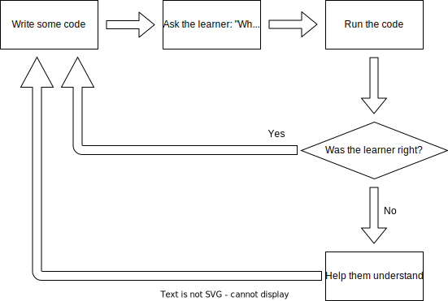

Links
To navigate this slide deck: Use cursor keys or click on arrows on bottom right. Use Esc key to toggle overviewPower to the people
Who teach the people
To code
Hi, I'm Sheena
|
 🧗♀️🏕️🧭🇿🇦🖊️🛠️🔥
🧗♀️🏕️🧭🇿🇦🖊️🛠️🔥
|
Who are you?
Give away my secrets
- Teaching learners makes my heart go boom
- Teaching teachers is much higher leverage
Growth mindset vs Fixed mindset
- Fixed Mindset: You either have it or you don't
- Growth Mindset: You have the ability to grow and learn
People with a growth mindset...
- Don't take failure personally - it's a lesson
- Look at a struggle positively
- More willing to seek out help (instead of hide deficiencies)
- More willing to take on bigger, harder challenges
- A lot more
Foster a growth mindset in...
- Your learners: it amplifies their rate of growth
- Yourself as a teacher: You can become a better teacher
Time spent with the learner

What is teaching?
- knowledge transfer?
- answering questions?
- solving problems?
Teaching is planting seeds

A good teacher
Sets a learner up so that they continue to learn and growAt the end of a good "class" a learner should...
- Feel that it is worth getting good - enthusiasm / curiousiosity
- Feel confident that they can move forward
- Know what steps to take
- Be able to take those steps
Sweet spot
Grit, determination, curiosity
A good teacher
- Is a good cheer leader
- Maintains psychological safety
A good teacher
Fosters a ____ MindsetIn their learners, and in themselves
A good teacher
- Challenges learners
- Sets them up to grow on their own
Mechanisms
Hands off the keyboard!
Solving problems
- Do not spoon-feed the learner solutions to problems
- Help a learner to become a problem solver
Keep the learner engaged
The learner must be an active part of the learning processHands off the keyboard!
(sometimes)Meet the learner where they are
Skills stack on top of skills

Classrooms and lectures
Bloom's 2 sigma problem
"The average student tutored one-to-one using mastery learning techniques performed two standard deviations better than students educated in a classroom environment"
One on one mastery learning techniques
Loop
Teaching fundamental coding concepts
A good teacher
- is a detective - focus on understanding the learner
- teach the learner to test their own skills
- create opportunities for the learner to be wrong => opportunities to level up
- celebrate the wins
Homework!
- Learn about the science (and pseudoscience) of learning - Make it stick
- Learn about growth and fixed mindsets
- Teach someone
The end
These slides - extra resources - links to my socials
Attribution
- Wikimedia attribution: https://commons.wikimedia.org/wiki/File:Standard_deviation_diagram.svg
- Creative commons licence